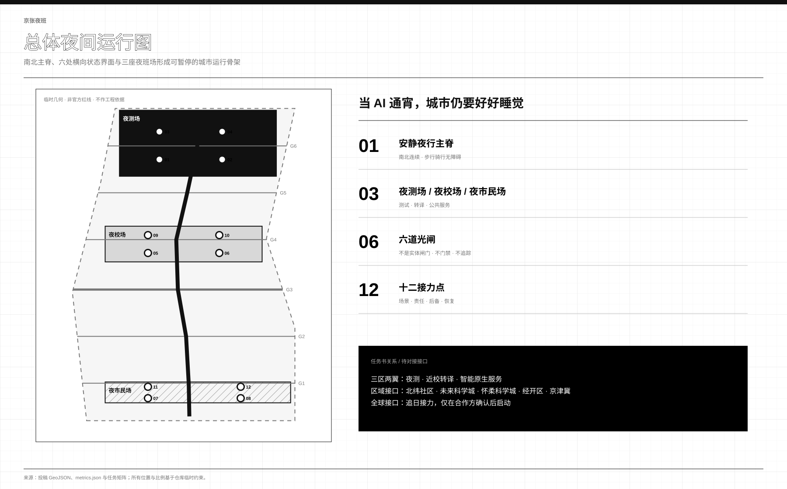
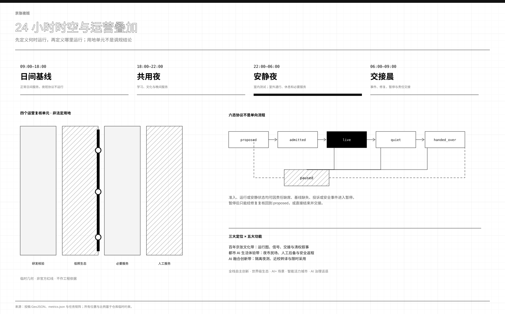
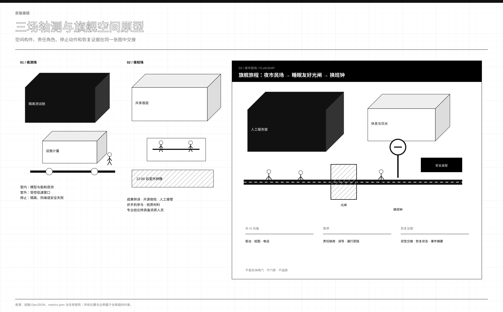
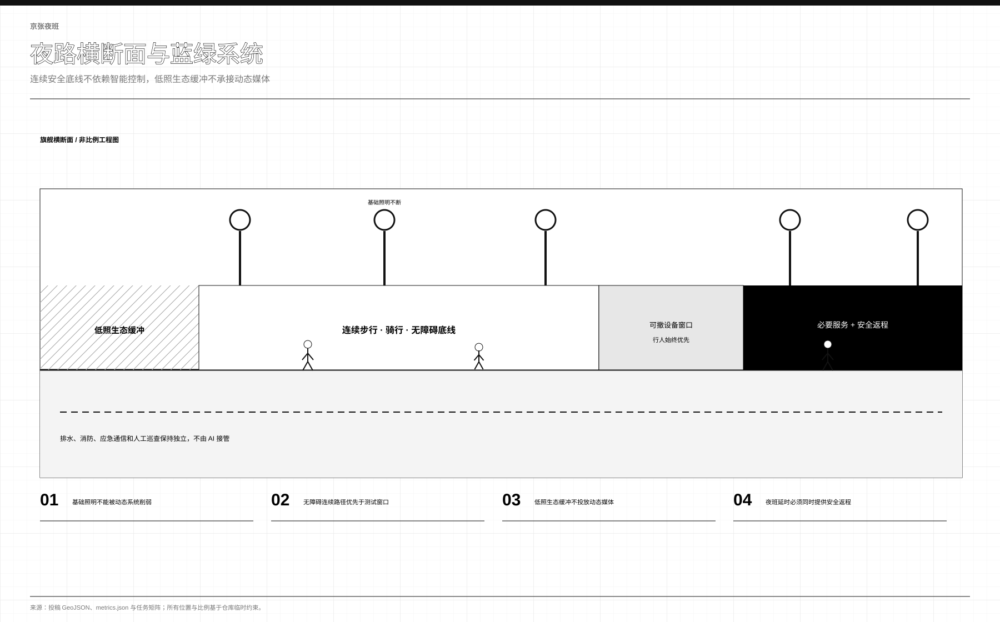
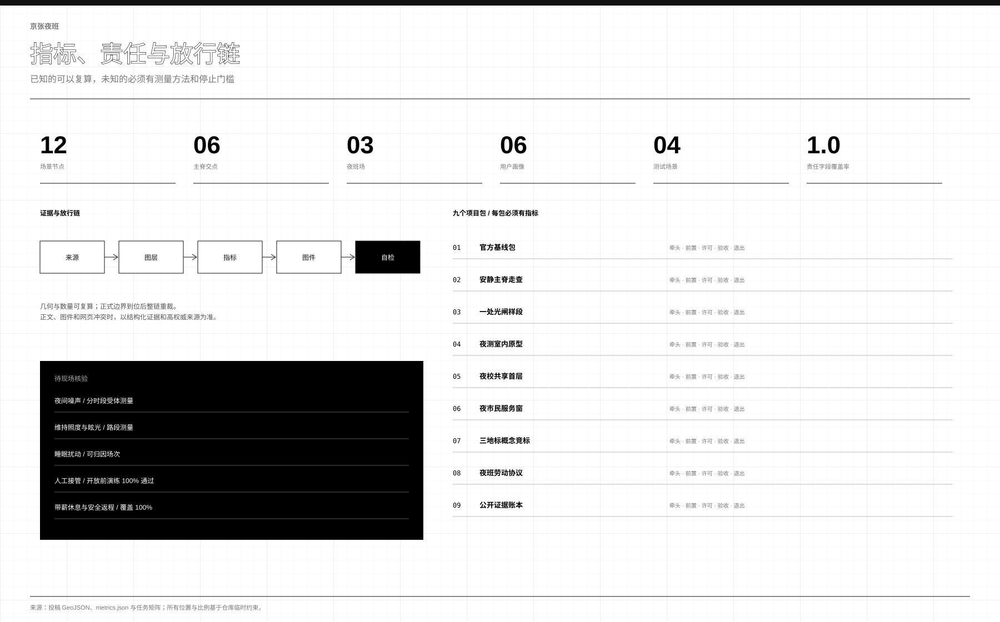

ONE · THREE · SIX · TWELVE
一条连续主脊，而非七条断线
六道光闸只转换照明、导视与运营状态，不是实体闸门、门禁、追踪或公共空间封闭。
06主脊真实交点
12责任字段完整节点
9.45 km临时概念主脊

DAY BASELINE · SHARED · QUIET · HANDOVER
夜间叠加层会关闭，也会暂停
三阶段均覆盖全场地。四个完整单元只用于运营复核，禁止解释为法定用地变更。
proposed → admitted → live ↔ quiet → handed_over
admitted / live / quiet → paused
paused → proposed | handed_over
admitted / live / quiet → paused
paused → proposed | handed_over

TEST · TRANSLATE · SERVE
夜市民场是公共门厅，不是通宵消费区
人工服务窗、厕所饮水、安静休息、无障碍路径、安全返程、低照生态边界与换班钟组成旗舰旅程。
03任务差异明确的夜班场
03责任型朝圣地标

BASE SAFETY · LOW LIGHT · REVERSIBLE TEST
安全不等于更亮
基础照明和无障碍通行持续有效；活动层可暂停，设备可撤，生态边界保留黑暗时间。所有照度与声环境数值等待现场测量。

EVIDENCE BEFORE EXPANSION
可复算的写数字，必须实测的保持未知
每个项目包固定牵头、资源类别、前置、许可、KPI 和退出。人工接管与带薪休息覆盖率的开放门槛均为 100%。
11.41 km²临时边界面积
12.34%临时绿地比
7.33%临时公共空间比
DETERMINISTIC REPLAY · 13/13 PASS
协议不靠善意理解，靠可复跑的检查
六态协议、四项运行门、四个时间带、十二节点责任字段与阶段一零新建承诺，由随包脚本执行十三项确定性检查，证据记录三个输入文件哈希、逐字节可复跑。
node visual/assets/run_night_protocol_tabletop.js --check
→ 13 checks · all_passed=true · byte-identical replay
→ 13 checks · all_passed=true · byte-identical replay
状态机连通 ✓ · 三态可暂停 ✓ · 暂停双出口 ✓ · live↔quiet 双向 ✓ · 四运行门 ✓ · 24h 时间带全覆盖 ✓ · 12 节点字段完整 ✓ · 三场全被引用 ✓ · 阶段一零新建 ✓
BUILT PARK · GIVE-BACK · INTEROP
v3：建成公园上的夜间运营章程
遗址公园二期 2026-08 全线开放，与一期连成约 9 公里全天无围栏线性公园（官方与官方媒体报道，仅作运营基线，不构成运营授权）。阶段一零永久新建即可启动：基线调查、纸面演练、既有空间内人工值守。夜测准入新增物理回馈条款：余热须声明公共去向，热噪外溢阈值写入停止条件。
13协议演练检查全通过
00阶段一永久新建（可从分期图层复算）
协议互操作（署名引用同一征集已合并方案的机制，不复制其文本图件）：授时带的到期时刻表管全生命周期，夜班管 22:00–06:00 班次；有度的量光门管光预算，夜班光闸管运行状态；暖线的给算站与物理回馈条款同源；开放站台的建成基底立场与零新建阶段一互证。